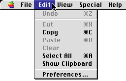
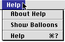

Menu Bar Changes
In keeping with the changes introduced in platinum appearance, the menu bar has gained a three-dimensional Apple logo, beveled edges, and anti-aliased corners. Menu dividers have an etched appearance. Figure 4-1 shows the new appearance.Figure 4-1 Menu bar using platinum appearance

The position of the Preferences command has been standardized to the bottom of the Edit menu.
Extended keyboard modifiers are now available to activate menu commands. This means you can use the Control, Shift, and Option keys (and display their glyphs) in addition to the Command key to create a much wider range of keyboard equivalents. For more information on keyboard equivalents, see "Keyboard Equivalent Support" (page 116).
The Help icon has become a standard menu title. This makes it easier for users to identify and use online help files. The Help menu always appears as the last menu from the left; all application menus and "service menus" (such as those created by telecommunications applications or disk utilities) should appear to the left of the Help menu. Figure 4-2 shows an open Help menu.

The Help menu contains the following items in order:
- About Help
- Show Balloons
- Help (for the current application) if any
- Shortcuts (for the current application) if any
- Note
- You should ensure that any help files you create are accessible onlythrough this menu, as well as the Command - ? and Help keyboard equivalents.